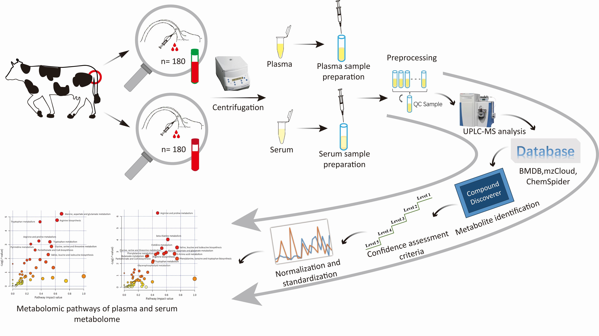

We are delighted to have you here! Raw data and clean data from the metabolome of Holstein bovine serum or plasma from two different farms are presented below. If you are interested in our project or have any questions, please feel free to contact us. Thank you!
Population A
Population B

The Whole Workflow and Technical Roadmap

(a) displays the violinplot of metabolomic profiles of six selected metabolites.(b) and (c) display the metabolomic profiles annotated to different classifications for plasma and serum metabolome.